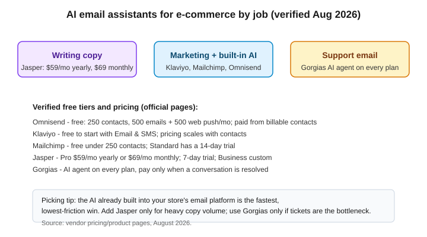

AI Email Assistants for E-commerce (2026): 7 Tools Tested
The short version
TL;DR: For e-commerce teams, AI email help comes in three flavors: platforms that write and send (Klaviyo, Mailchimp, Omnisend), standalone copywriters (Jasper), and support agents that answer inbound email (Gorgias). If you already run a store, the fastest win is the AI already built into your email platform, not a new tool. For most small shops, Omnisend's free plan is the lowest-friction start; Klaviyo is the deeper end for serious segmentation; Jasper is only worth it if you write a high volume of campaign copy by hand; and Gorgias is a support-ticket answerer, not a marketing sender.Every price and feature below was checked against the official pricing or product pages of the vendor in August 2026: Omnisend pricing, Klaviyo pricing, Mailchimp pricing, Jasper pricing, and Gorgias pricing. SaaS pricing and AI feature sets shift often, so treat anything specific as a snapshot, not a contract.
What does an "AI email assistant" actually do for e-commerce?
Three jobs, and no single tool does all three well. The first is writing: subject lines, headlines, and body copy, sometimes generated straight from your product feed. The second is automation and personalization: deciding who gets which email when, and inserting recommended products based on past purchases and browsing. The third is support: reading inbound customer emails and drafting or auto-answering replies. Keep those three jobs in mind, because the right pick depends on which one you are trying to fix.
Which e-commerce email platforms have useful built-in AI?
This is the category most store owners should look at first, because the AI is wired directly into your data and your sending.
Klaviyo positions its AI layer, called K:AI, across the whole platform. The official pricing page lists a free start for email and SMS and calls out several AI products: Composer (in beta) lets you audit and create flows and campaigns from a prompt, and a Customer Agent handles support and sells using your data. Klaviyo integrates with Shopify, WooCommerce, Magento, BigCommerce, Wix, and Commerce Cloud, and its marketplace has 350+ apps. Pricing scales with contacts and features, so there is no single monthly sticker to quote.
Mailchimp lists AI writing and design tools and "enhanced automations" as Standard-plan features, plus generative AI features on paid plans. Its free tier covers accounts under 250 contacts, and the Standard plan comes with a 14-day trial. The Premium tier advertises up to 150,000 email sends per month, predictive segmentation, advanced automation, and unlimited seats. Mailchimp is a general marketing platform, so it works for e-commerce but is not built around product data the way Klaviyo is.
Omnisend is built specifically for online stores and is the closest match to this site's e-commerce focus. Its official pricing page shows a free plan with 500 emails and 500 web push notifications per month for up to 250 contacts, no credit card required, and 24/7 support on every plan including free. The AI features that matter for e-commerce are a personalized product recommender that inserts products based on browsing and purchase behavior, an AI sending-time optimizer, Forms AI that builds forms from a prompt, and Reports AI for insights. Omnisend also claims savings of up to 35% versus Klaviyo on its pricing page and offers 30% off if you pay three months upfront. Billing is per billable contact (subscribers plus recipients you send automated messages to; unsubscribed contacts are not billed), so the monthly number depends on your list size.
When is a standalone AI writing tool worth it?
If your bottleneck is drafting copy, not sending, then the AI built into your platform might be enough, and a message generator that connects to your store data will often beat a general writer. Standalone tools still have a place for teams that produce a lot of campaign or lifecycle copy and want brand-voice control.
Jasper is the main standalone option in this space, and its official pricing is flat rather than contact-based: Pro at $59 per month billed yearly or $69 billed monthly, cancel anytime, with a 7-day free trial, and Business at custom pricing. Jasper is a general marketing AI, so you describe your brand voice and paste outputs into your email platform rather than sending from Jasper directly. That extra hop is fine for content teams and awkward for a two-person store.
What if the problem is inbound support email?
Marketing automation does not answer customers. If your team is drowning in "where is my order" email, you need a support tool, and that is a different purchase.
Gorgias combines a helpdesk with an AI agent made for Shopify stores. Its official pricing page says the AI agent comes on every plan and you only pay when it resolves a conversation, while the helpdesk scales from 50 to 5,000 tickets a month and is never priced per agent. Voice and SMS are add-ons priced by usage. Gorgias claims to power customer conversations for 40% of Shopify brands. Pair it with your marketing platform rather than treating it as a replacement.
Comparison at a glance
| Tool | Best for | Official pricing (Aug 2026) | Key AI features |
|---|---|---|---|
| Omnisend | E-commerce email + SMS from one platform | Free plan: 250 contacts, 500 emails/mo; paid from billable contacts | Product recommender, sending-time optimizer, Forms AI, Reports AI |
| Klaviyo | Segmentation-heavy e-commerce marketing | Free to start with Email & SMS; scales with contacts | K:AI, Composer (beta) from a prompt, Customer Agent |
| Mailchimp | General marketing with AI assists | Free under 250 contacts; Standard has 14-day trial | AI writing & design tools, generative AI, predictive segmentation (Premium) |
| Jasper | High-volume campaign copy generation | Pro $59/mo yearly or $69/mo monthly; Business custom | Brand voice, campaign drafting, AI agents |
| Gorgias | AI answers to inbound support email | AI agent on every plan; pay per resolved conversation | AI Agent, helpdesk 50-5,000 tickets/mo |

How do you test these without signing a long contract?
Start free before you pay for anything. Omnisend's free plan, Mailchimp's under-250-contacts free tier, and Klaviyo's free start all exist for this reason. Run one real campaign and one abandoned-cart flow end to end and judge on output quality plus how much manual editing you still do. For Jasper, the 7-day trial settles whether the brand voice is worth $69 a month. If your volume is not there yet, stay on free tiers and upgrade when a specific limit bites you, not before.
Recap checklist
- Write down which pain point you are fixing: writing, automation, or support email.
- Look first at the AI already built into your current email platform before buying anything.
- Use a free tier (Omnisend, Mailchimp, or Klaviyo) to run a real campaign before paying.
- Only add Jasper if you draft a high volume of copy and want brand-voice control.
- Treat inbound support email as a separate problem and evaluate Gorgias only if tickets are the bottleneck.
- Re-check pricing on the official page before committing; contact-based plans change with your list size.
FAQ
Is Klaviyo or Omnisend better for a small e-commerce store?
Both start free and are built for online stores. Omnisend is the lighter setup with a clearly documented free tier (250 contacts, 500 emails per month) and claims savings over Klaviyo on its pricing page. Klaviyo is deeper for advanced segmentation and predictive behavior, and it prices from billable contacts. For a brand-new store, start on the free tier of whichever integrates cleanly with your platform, then reassess at a few hundred contacts.
Can AI write my emails automatically?
Mostly, but you should review before sending. Mailchimp and Jasper both generate copy and design, and Klaviyo's Composer (in beta) audits and creates flows and campaigns from a prompt. E-commerce messages still carry real consequences, so spot-check pricing, product links, and tone before hitting send.
Does Jasper replace Mailchimp or Klaviyo?
No. Jasper writes copy but does not send or manage your list. You still need an email platform for delivery, segmentation, and automations. Jasper pays off when you need a lot of consistent campaign copy; otherwise the writer built into your platform is enough.
How are e-commerce email tools priced?
Two models. Marketing platforms like Omnisend, Klaviyo, and Mailchimp price by billable contacts plus plan tier, so the monthly cost grows with your list. Standalone writers like Jasper charge a flat monthly rate ($59 yearly or $69 monthly for Pro). Support tools like Gorgias price per resolved conversation. Check the official page for the number that matches your list size.
Are these tools Shopify-only?
No, but Shopify integration is a big focus. Klaviyo integrates with Shopify, WooCommerce, Magento, BigCommerce, Wix, and Commerce Cloud. Gorgias describes itself as powering conversations for many Shopify brands. Omnisend is e-commerce-focused and works across the major platforms. Confirm the exact integration for your store on the vendor's page.